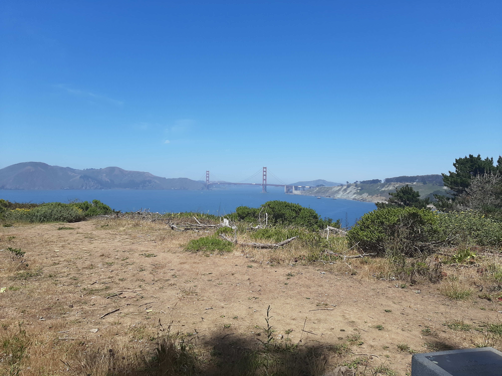
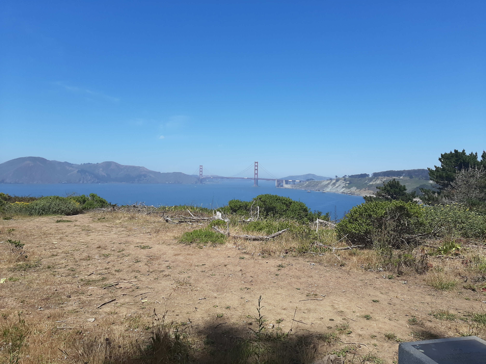
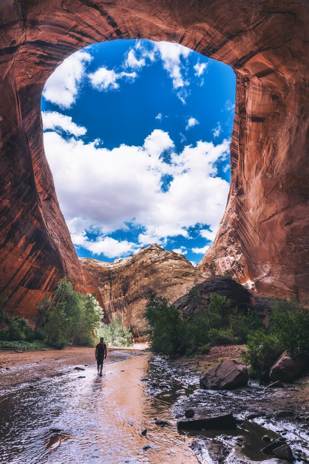
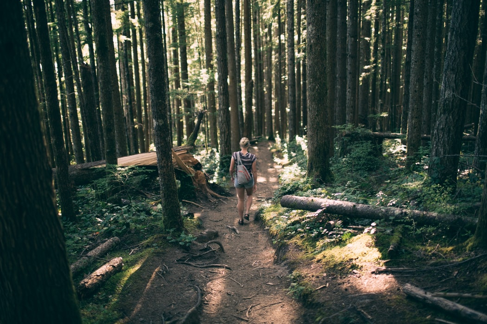
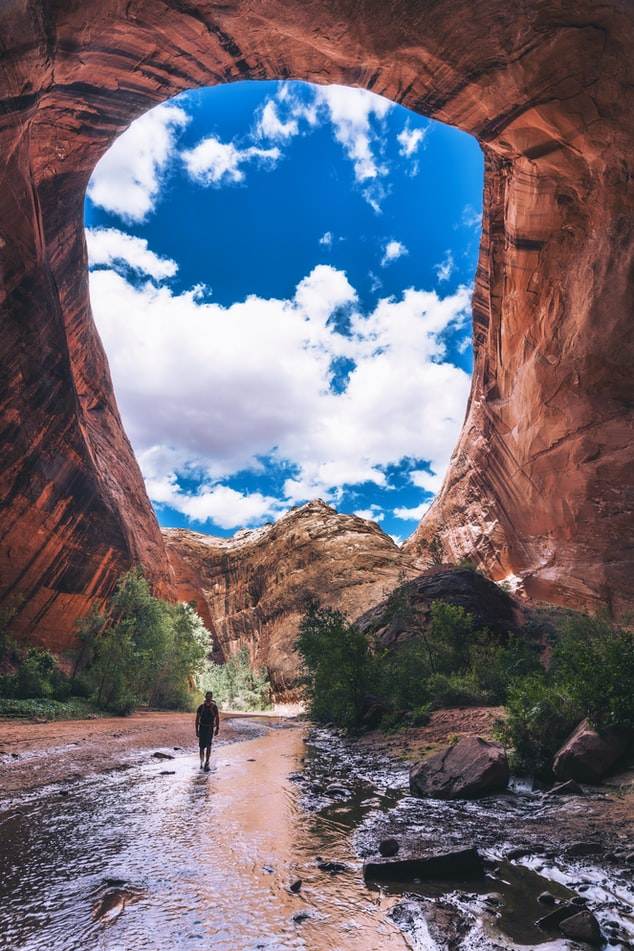
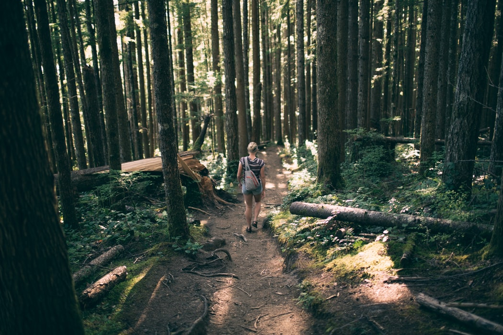

Growing up in California Ive been very fortunate to live in a state that has many different natural elements. Forest, deserts, and coast are some of the many that can be found here. I have lived in California my whole life and have had the opportunity to explore its terrain from North to South, East to West. I have always enjoyed hiking as a way to relieve stress and be a part of nature. It has a calming effect when your out on trails plus its great way to stay fit. Here in this region, the Bay area, there are many great spots. I will talk about a few of them further down.
Most people would think that theres not too much you need to know when it comes to hiking. The truth is theres more to it than meets the eye. It can become difficult if you arent well prepared. Simple things that are important like bringing plenty of water and the ability to be aware of your surrondings.It is pretty much a safe activity depending on the location you choose to explore. You can go to a well traveled area with lots of people or deep into the mountains wich i wouldnt recommend if your new.Here are a few good tips that ive picked up along the way.
For a beginner I would recommend choosing an area that is relativley flat. You dont want to walk uphill, reach a high elevation and burn yourself out right away. I would say be aware of any limitations you might have. Hiking is a hobby that people of all ages can partake in. You just have to start off slowly like with most things and progress with time. Here in the bay area there are many places to hike. Ive shared some pictures and links to some popular hiking locations.
 


Some other images
 



Photo credits:
Websites: